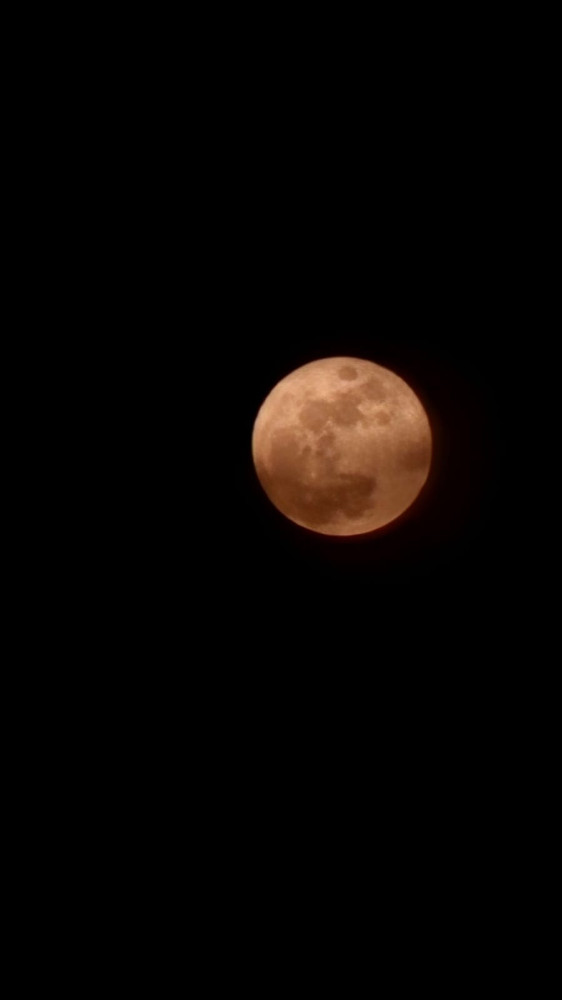
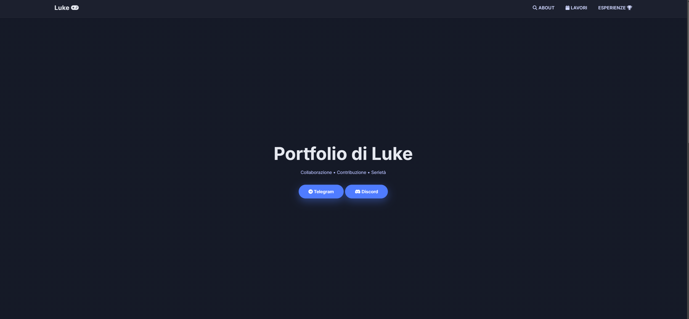
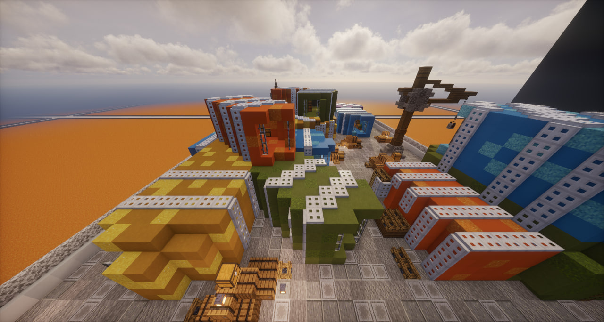
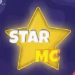
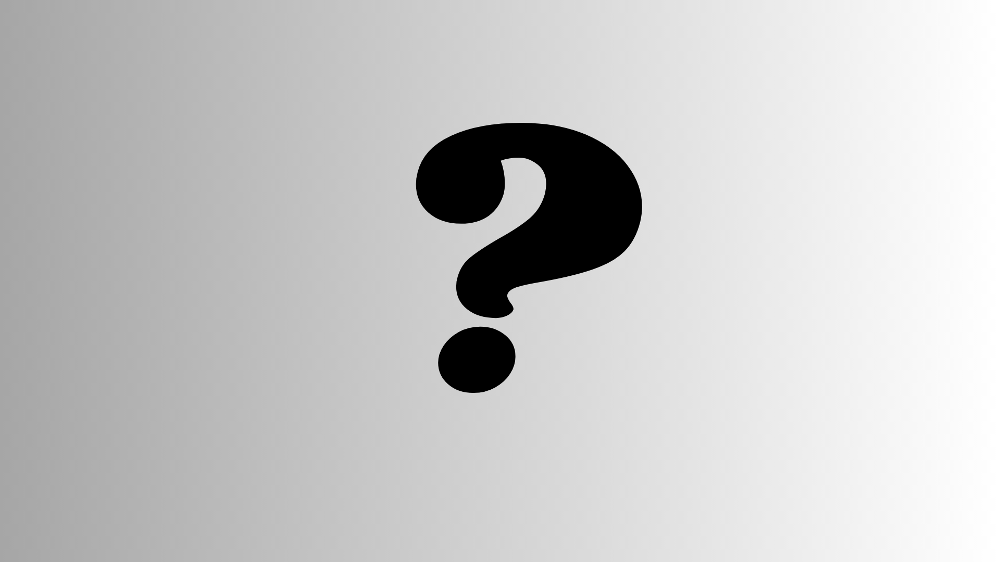
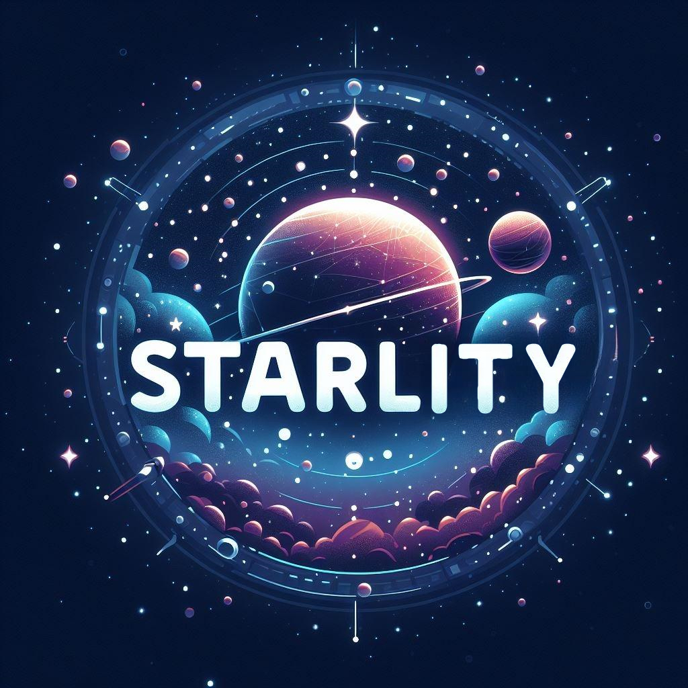
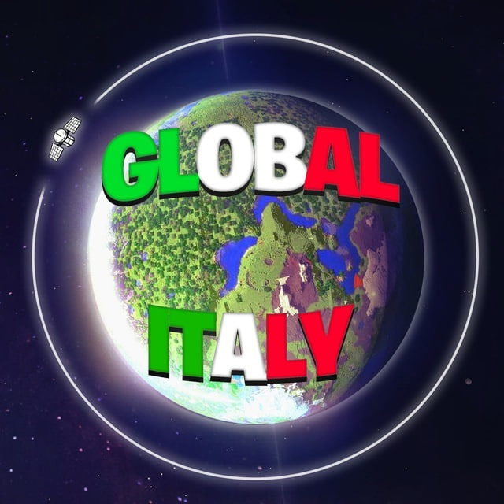

Sono Lunaticooh (chiamato più semplicemente Luke),
e ho una grande passione per il building e la creatività in tutte le sue forme.
Mi considero una persona molto creativa, sempre pronta a sperimentare e a dare vita a nuove idee.
Mi piace creare, modificare e migliorare tutto ciò che mi capita tra le mani,
cercando sempre di imparare qualcosa di nuovo lungo il percorso.
Sono costantemente alla ricerca di cose interessanti da scoprire e approfondire,
perché credo che ci sia sempre spazio per crescere e sviluppare nuove abilità.




Un server che mi ha fatto imparare molte cose.
Vorrei stare qui a scrivere tante cose su StarMC:
al tempo ero solo un ragazzo di 13 anni, ma mi ha portato un sacco di esperienza e divertimento.

Ho contribuito a questo server per poterlo aprire, poi per colpa di un attaco DDos non è riuscito ad aprire ed il progeto è fallito.

Un server discord che ha provato a creare un server direttamente su Minecraft, ma dopo mesi il progetto è fallito per mancanza di fondi. (Il server discord è ancora presente sulla piattaforma)

Un server Minecraft fatto veramente bene, molto sottovalutato ma con un bellissimo potenziale, in questo server ho contribuito da S.Manager dove ho contribuito nella rifinizione del OP Prison.